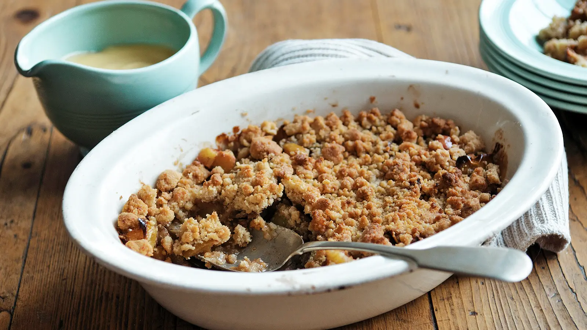

Apple Crumble

Crimble Crumble!
A classic dessert which will blow your socks off
Ingredients
For the Crubmle
- 300g plain flour
- 175g brown sugar
- 200g unsalted butter at room temperture, cubed, plus a little for greasing
For the filling
- 450g apples, peeled, cored and cut into 1cm pieces
- 50g brown sugar
- 1 tbsp plain flour
- 1 pinch ground cinnamon
Method
- Preheat the oven to 180C/160C Fan/Gas 4.
- Place the flour, salt and sugar in a large bowl and mix well. Taking a few cubes of butter at a time rub into the flour mixture. Keep rubbing until the mixture resembles breadcrumbs and all the butter is incorporated.
- Place the fruit in a large bowl and sprinkle over the sugar, flour and cinnamon. Stir well, being careful not to break up the fruit.
- Butter a 24cm/9in ovenproof dish. Spoon the fruit mixture into the bottom, then sprinkle the crumble mixture on top.
- Bake for 40–45 minutes until the crumble is browned and the fruit mixture bubbling.
- Serve with thick cream or custard.
- Enjoy!